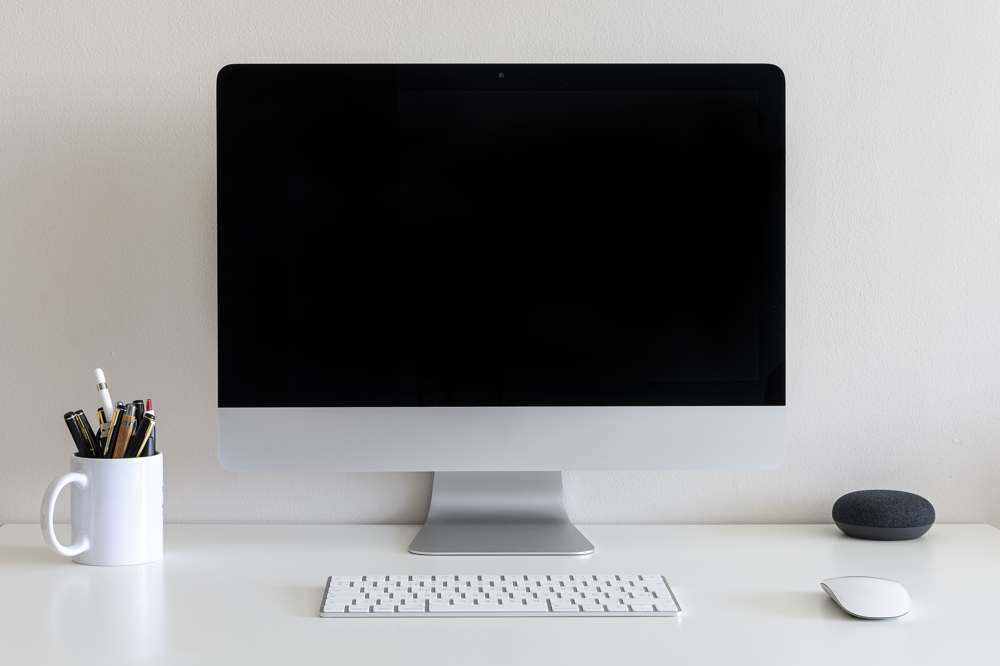
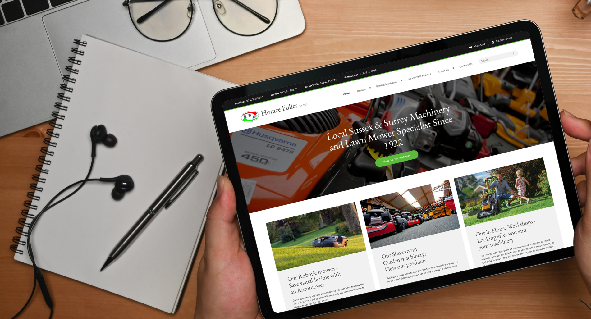
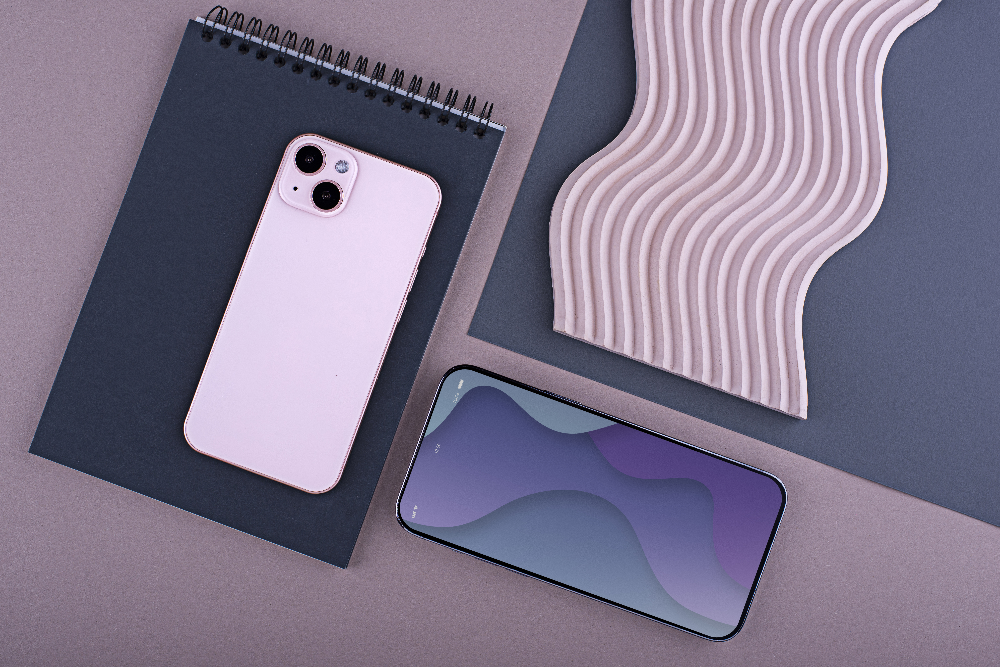

About This Project
Designing with responsiveness and usability in mind
This responsive web application was developed as part of a Creative Computing assessment to demonstrate effective use of modern HTML and CSS techniques. The focus was placed on accessibility, scalability, and clean user experience across devices.
Design Philosophy

Desktop-First Clarity
Layouts are structured using CSS Grid to create clear hierarchy.

Tablet Adaptation
Spacing and column counts adapt smoothly at mid-range widths.

Mobile Priority
Single-column layouts ensure readability and usability.